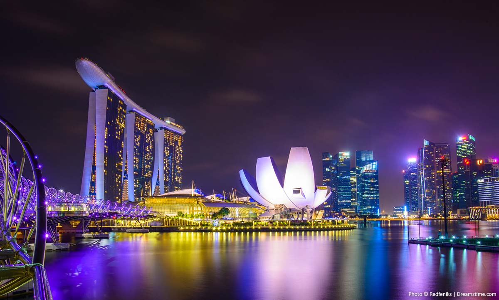

Singapore è un'isola città-stato a sud della Malesia, centro finanziario globale con clima tropicale e popolazione multietnica.
Ufficialmente riconosciuta come repubblica, Singapore è una città-Stato che fa parte della penisola malese, di cui rappresenta la parte più a sud.
Confina infatti a nord con la Malesia e a sud con le Isole Riau dell'Indonesia. E si estende su un arcipelago di circa 60 isole. La più grande ospita l'omonima metropoli.
Il suo nucleo coloniale ruota attorno a Padang, originariamente un campo di cricket risalente al 1830 circa e ora affiancato da grandi edifici, come il municipio con le sue diciotto colonne corinzie. Nella Chinatown di Singapore, risalente
al 1820 circa, si trova il tempio della Reliquia del Dente di Buddha.aveva un suono gradevole
Dopo Monaco, Singapore è il paese più densamente popolato al mondo con 6.430 persone per chilometro quadrato. Qui quasi 9 abitanti su 10 vivono in appartamenti di edilizia residenziale pubblica, ma questo non viene considerato segno di povertà, visto che alcune case raggiungono quotazioni milionarie.

È alta 40 metri ed è la cascata interna più grande del mondo, quella realizzata nel centro commerciale dell'aeroporto Changi di Singapore aperto nelle scorse settimane. Una cupola di vetro e acciaio da cui scorre a cascata l'acqua piovana, circondata da centinaia di piante che rendono questo spazio molto simile a una serra. Una vera e propria esperienza visiva all'interno di uno scalo che, nel 2018, ha visto 65,6 milioni di persone transitare al suo interno.
Singapore si sviluppa su una superficie di 710,30 km2 in cui vivono 5,47 milioni di abitanti. Qui vengono parlate quattro lingue ufficiali e convivono ben cinque religioni (Buddismo, Taoismo, Induismo, Islam, Cattolicesimo).
Singapore è uno Stato insulare costituito da 63 isole. L'isola principale è nota come isola di Singapore, ma è ufficialmente chiamata Pulau Ujong . Le isole di Jurong, Pulau Tekong,Pulau Ubin e Sentosa sono le più grandi fra le isole minori dell'arcipelago. Come risultato, la superficie di Singapore è cresciuta dai 581,5 km² del 1960 ai 712 km² del 2010.
Il Marina Bay Sands è un casinò resort di Singapore. Sviluppato dalla Las Vegas Sands e disegnato da Moshe Safdie, è ad oggi il terzo casinò al mondo per estensione dopo il Grand Lisboa di Macau e il Casino de Montréal. Con il casinò completo, il resort dispone di un albergo, un centro convegni, un centro commerciale, un museo di arte e scienza, due teatri, sette ristoranti, due padiglioni di cristallo galleggianti e una pista di pattinaggio.

Clicca qui per saperne di più e per organizzare viaggia Singapore